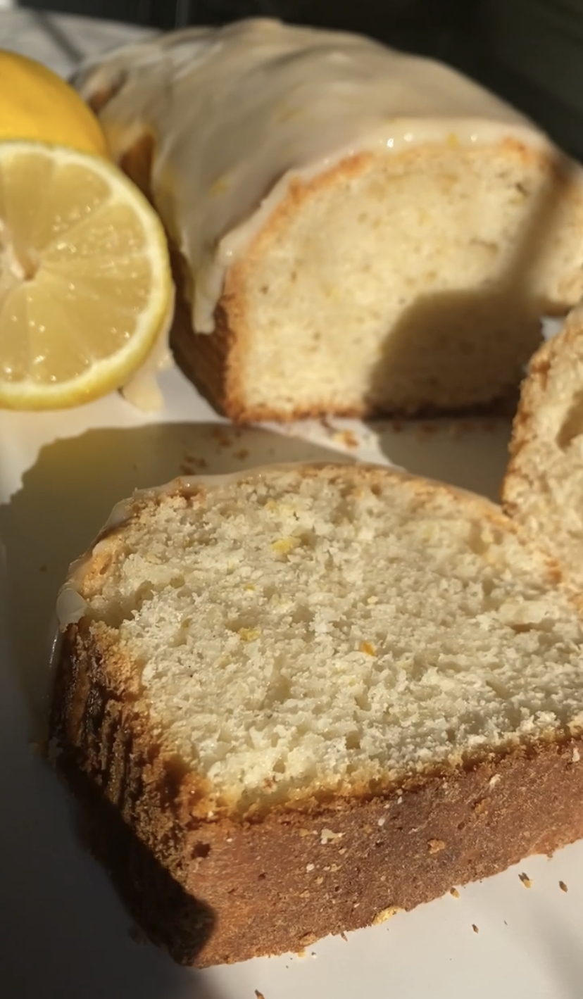
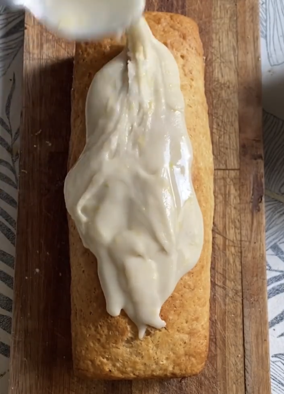

Budín de Limón y Glaseado
GF
DF
NS

Este es de los mejores budines que hice (y eso que hice un montonazo).
Es riquísimo y la consistencia que tiene es una locura.
Budín de Limón y Glaseado
Podés hacerlo de naranja, sumarle arándanos, semillas de amapola o lo que quieras
TIEMPO PREPARACIÓN
15 minutos
TIEMPO COCCIÓN
40 minutos
TIEMPO TOTAL
55 minutos
Porciones: 15
Platos: Merienda
Tags: Vegano, Sin Gluten (Opcional)
Ingredientes
- 300g de harina 0000 o premezcla + 2 cdtas de polvo para hornear + pizca de sal
- 120g de azúcar
- limón: 50ml jugo + 2 cdas de ralladura
- 4 cdas de de aceite
- 200ml de agua o leche vegetal
- 1 cdta de esencia de vainilla
- para el glasé: azúcar impalpable + ralladura de limón + leche vegetal
Instrucciones
- Mezclá todos los secos en un bowl (harina, polvo para hornear, sal y azúcar).
- Agregá los líquidos (aceite, agua, esencia, jugo) y la ralladura. Incorporá hasta que no haya grumos.
- Verté en molde de budín aceitado y enharinado y llevá a horno precalentado a 180 grados por 40 minutos o hasta que al pincharlo salga seco.
- Cuando enfríe el budín, hacé el glasé mezclando el azúcar impalpable con la ralladura y agregando muy de a poquito la leche vegetal. No te me vayas de mambo con la cantidad de líquido, la clave de un buen glasé es que tenga poco líquido. Esperá unos minutos a que solidifique y ¡A COMEEEER!
Tips
- Si me conoc√©s, sab√©s el tip de oro de mi abuela: no comerlo hasta el d√≠a siguiente. Hace la diferencia, pero nadie me hace casoü§£
- Muchas personas celíacas me mandan sus budines hechos tal cual mi receta pero con premezcla. Animate que quedan bien!

Buenas, Soy Valen!
Soy vegetariana hace más de 4 años y en mi tiempo libre me divierto creando recetas basadas en plantas.
Más Sobre MíKEYS RECETAS
V
Vegano
VG
Vegetariano
GF
Gluten Free
AP
Alta en proteínas
BA
Baja en Azúcares